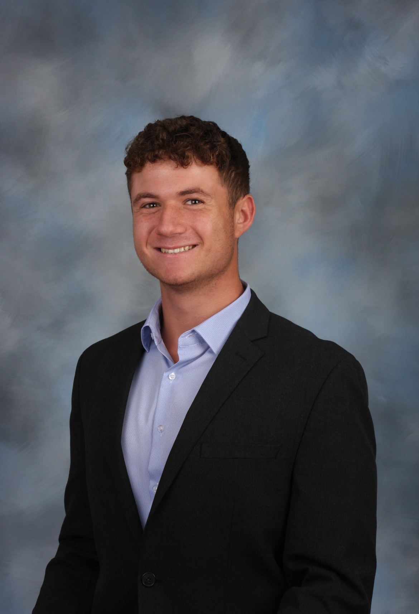

Student at Phillip Merril College of Journalism
Report on University of Maryland sports in the field and in-studio for “The Left Bench” show, including football, men’s basketball, men’s lacrosse, baseball and women’s volleyball. Record stand-ups at games and join anchors in-studio to offer analysis on University of Maryland sports. Edit packages using Adobe Premiere Pro and create graphics using Adobe Photoshop. Reports are circulated on YouTube, the Terrapin Sports Central website and social media.
Men's soccer beat reporter during the Fall 2024 semester. Write articles on all men's soccer games. Attend all men's soccer home games and conduct post-game interviews with coaches and players. Improved writing and reporting skills, time management and writing on deadline.